Dokumentasi Sejarah
Jejak Langkah Kasultanan
Ngayogyakarta Hadiningrat
Cikal Bakal Kerajaan Mataram Islam
Berdiri sebuah kerajaan Islam di Jawa bagian tengah-selatan bernama Mataram yang berpusat di Kota Gede (sebelah tenggara kota Yogyakarta saat ini). Seiring berjalannya waktu, pusat pemerintahan sempat berpindah-pindah ke Kerta, Plered, Kartasura, hingga Surakarta akibat intervensi Kumpeni Belanda yang kian mengganggu kedaulatan kerajaan.
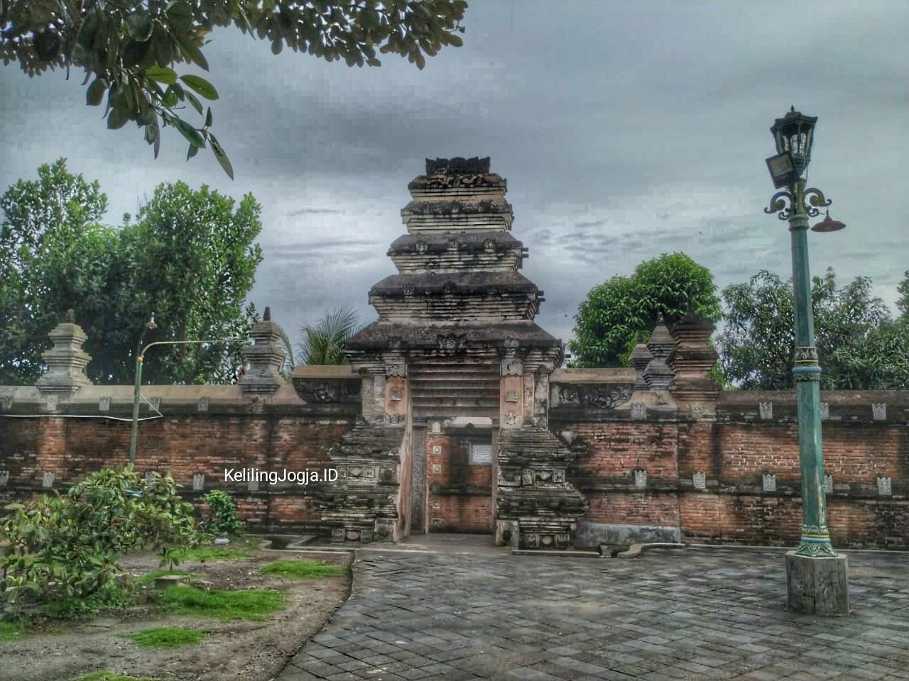
Perang Takhta Jawa III
Konflik besar yang melibatkan Pangeran Mangkubumi melawan VOC dan Susuhunan Pakubuwana II. Perjuangan dan gerakan anti-penjajah ini menjadi batu pijakan awal yang kuat sebelum lahirnya entitas berdaulat baru di tanah Mataram Islam.

Perjanjian Giyanti & Kisah Sang Pendiri
Perjanjian monumental (Palihan Nagari) yang membagi Kerajaan Mataram menjadi dua wilayah kedaulatan: Kasunanan Surakarta Hadiningrat di bawah Paku Buwono III dan Kasultanan Ngayogyakarta Hadiningrat di bawah Pangeran Mangkubumi yang bergelar Sultan Hamengku Buwono I. Beliau merupakan arsitek ulung yang meletakkan poros imajiner filosofis tata ruang pusat pemerintahan.
Perjanjian Jatisari & Peletakan Dasar Budaya
Pertemuan penting antara Sultan HB I dan Sunan PB III di Lebak, Jatisari untuk membahas perbedaan identitas kedua wilayah, meliputi tata cara berpakaian, bahasa, adat, hingga seni tari. Sultan Hamengku Buwono I memilih melanjutkan tradisi asli Mataram, sedangkan Sunan Pakubuwono III sepakat memodifikasi budaya baru.
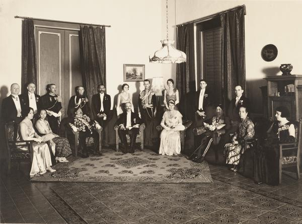
Hadeging Nagari Ngayogyakarta Hadiningrat
Tanggal bersejarah di mana proklamasi atau Hadeging Nagari Ngayogyakarta Hadiningrat resmi dikumandangkan. Peristiwa ini menandai lahir dan berdirinya secara resmi negara baru Kasultanan Yogyakarta.
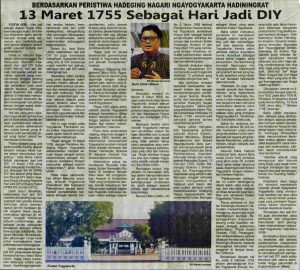
Awal Pembangunan & Pesanggrahan Ambar Ketawang
Sri Sultan Hamengku Buwono I mulai membuka Hutan Pabringan untuk mendirikan kompleks istana. Selama proses pembangunan yang memakan waktu hampir satu tahun tersebut, Sri Sultan beserta keluarga dan pengikutnya bertempat tinggal di Pesanggrahan Ambar Ketawang.
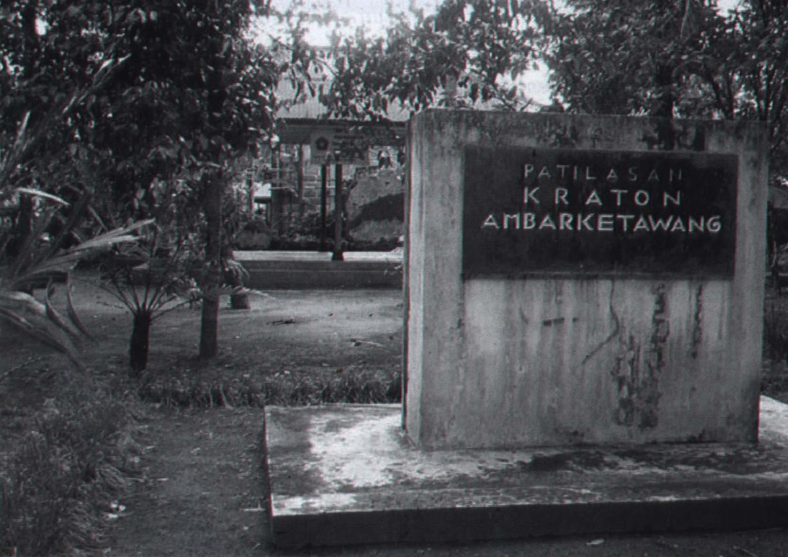
Peresmian & Memasuki Keraton Yogyakarta
Sri Sultan Hamengku Buwono I beserta keluarga resmi memasuki Keraton Yogyakarta yang dirancang penuh simbolisme spiritual dari Gunung Merapi hingga Laut Selatan. Peristiwa bersejarah ini ditandai dengan sengkalan memet sakral: Dwi Naga Rasa Tunggal dan Dwi Naga Rasa Wani.

Serangan Inggris & Berdirinya Kadipaten Pakualaman
Menyusul serangan Inggris ke keraton pada Juni 1812, Sultan HB II dipaksa turun takhta. Sebagian wilayah Kasultanan otonom di daerah Adikarto (Kulonprogo selatan) diserahkan kepada Pangeran Notokusumo (putera HB I) yang kemudian mendeklarasikan berdirinya Kadipaten Pakualaman sebagai Adipati Paku Alam I sejak 17 Maret 1813.
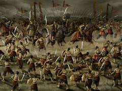
Perang Jawa (Pangeran Diponegoro)
Perlawanan terbesar masyarakat Jawa melawan kolonialisme Hindia Belanda. Dipimpin langsung oleh Pangeran Diponegoro, konflik hebat ini menguras kas pertahanan kolonial dan mengobarkan heroisme total di tanah Jawa.
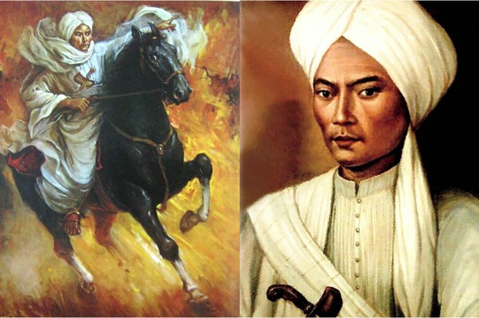
Amanat 5 September & Integrasi NKRI
Pasca Proklamasi RI, Sri Sultan HB IX dan Sri Paduka Paku Alam VIII mengeluarkan amanat monumental pada 5 September 1945 yang menyatakan wilayahnya terintegrasi dengan NKRI. Presiden Sukarno menetapkan Sultan HB dan Paku Alam sebagai dwi tunggal yang memegang kekuasaan atas Daerah Istimewa Yogyakarta.
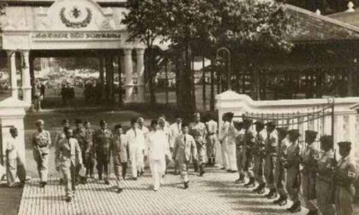
Serangan Umum 1 Maret
Aksi ofensif militer berskala besar guna merebut kembali kota Yogyakarta dari pendudukan tentara Belanda selama 6 jam. Keberhasilan ini membuktikan kepada dunia internasional bahwa eksistensi TNI dan negara RI masih tegak berdiri.
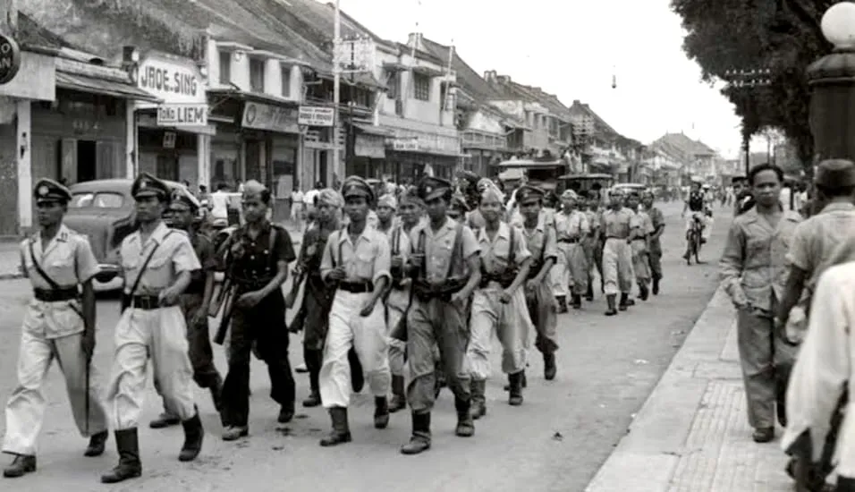
Undang-Undang Keistimewaan
Disahkannya UU No. 13 Tahun 2012 mengukuhkan kembali status hukum Daerah Istimewa Yogyakarta, memastikan warisan budaya Kasultanan dan Pakualaman tetap lestari. Kini Yogyakarta berkembang menjadi perpaduan kota kebudayaan tradisional yang luhur sekaligus ekosistem kota digital modern yang cerdas.
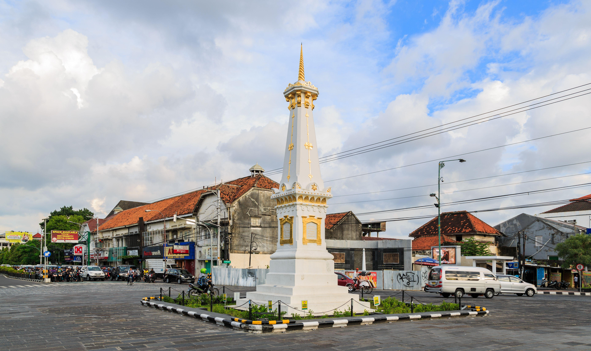
Sri Sultan Hamengku Buwono I
Lahir dengan nama BRM Sujono (Pangeran Mangkubumi), beliau merupakan pendiri Kasultanan Yogyakarta sekaligus arsitek ulung Keraton. Dikenal sangat cakap dalam olah keprajuritan, mahir berkuda, serta teguh menjunjung tinggi nilai luhur budaya dan spiritual Jawa.
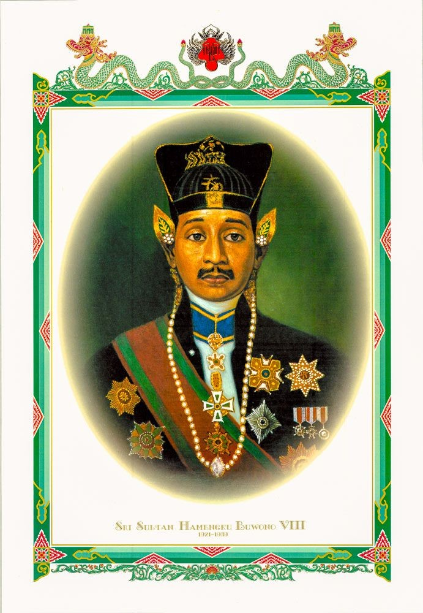
Sri Sultan Hamengku Buwono II
Lahir dengan nama RM Sundoro, masa kecilnya dihabiskan di pengungsian akibat perang melawan VOC, membentuk karakternya menjadi sosok yang tegas dan keras terhadap penjajah. Beliau resmi diangkat menjadi putra mahkota pada tahun 1758.
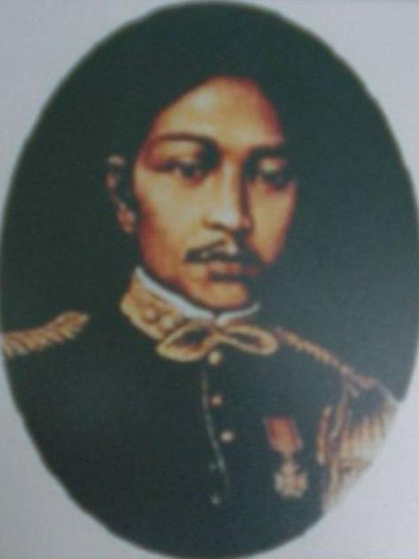
Sri Sultan Hamengku Buwono III
Memiliki nama kecil Raden Mas Surojo, beliau dikenal sebagai pribadi yang pendiam dan bijaksana. Memerintah di era penuh pergolakan takhta dan intervensi kolonial yang memuncak pada penyerbuan Keraton Yogyakarta oleh pasukan Daendels.
Sri Sultan Hamengku Buwono IV
Naik takhta pada usia sangat belia (10 tahun) dengan nama kecil GRM Ibnu Jarot. Karena usianya yang masih anak-anak, roda pemerintahan sementara didampingi oleh wali raja, yaitu Pangeran Notokusumo (Paku Alam I).
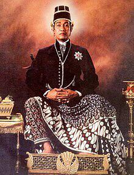
Sri Sultan Hamengku Buwono V
Lahir dengan nama GRM Gatot Menol, beliau dinobatkan sebagai sultan saat masih berusia 3 tahun akibat wafatnya sang ayah. Tumbuh dengan karakter lemah lembut, beliau memimpin pemerintahan didampingi dewan perwalian.
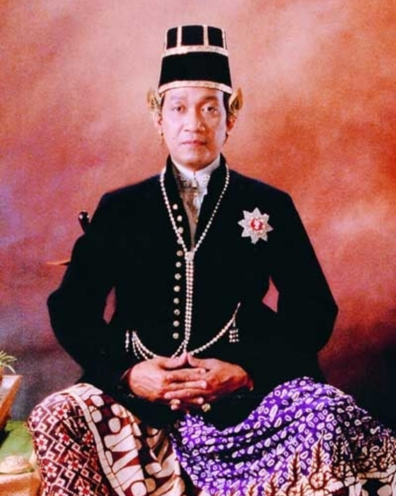
Sri Sultan Hamengku Buwono VI
Lahir dengan nama Raden Mas Mustojo, beliau merupakan perwira militer berpangkat Kolonel sebelum meneruskan takhta kakandanya (HB V) yang wafat tanpa meninggalkan putra mahkota yang sudah lahir.
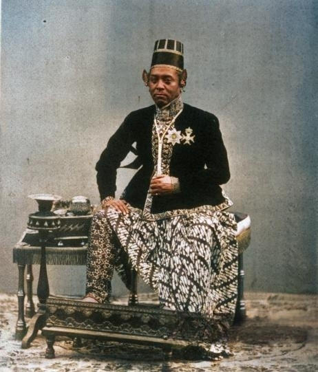
Sri Sultan Hamengku Buwono VII
Lahir dengan nama Raden Mas Murtejo, beliau dinobatkan pada usia 36 tahun. Di bawah kepemimpinannya, Yogyakarta mengalami kemajuan industrialisasi yang pesat, ditandai dengan berdirinya banyak pabrik gula.
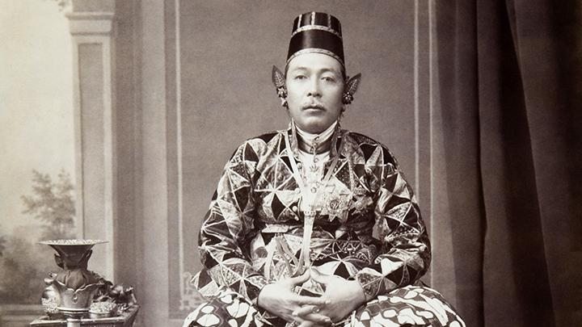
Sri Sultan Hamengku Buwono VIII
Lahir dengan nama GRM Sujadi, beliau tengah menempuh studi di Belanda ketika proses transisi takhta dipercepat karena sang ayah menyatakan niat untuk lengser keprabon demi stabilitas pemerintahan.
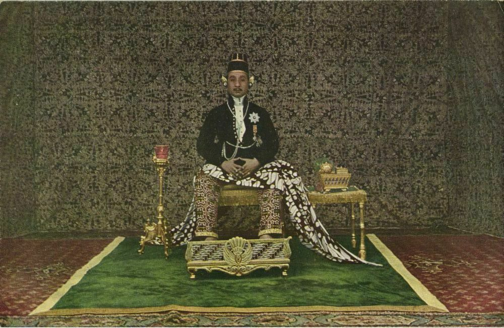
Sri Sultan Hamengku Buwono IX
Lahir dengan nama GRM Dorojatun, masa mudanya dididik mandiri layaknya rakyat biasa di luar lingkungan keraton bersama keluarga Belanda. Kelak menjadi tokoh kunci yang mengintegrasikan Yogyakarta ke dalam NKRI.
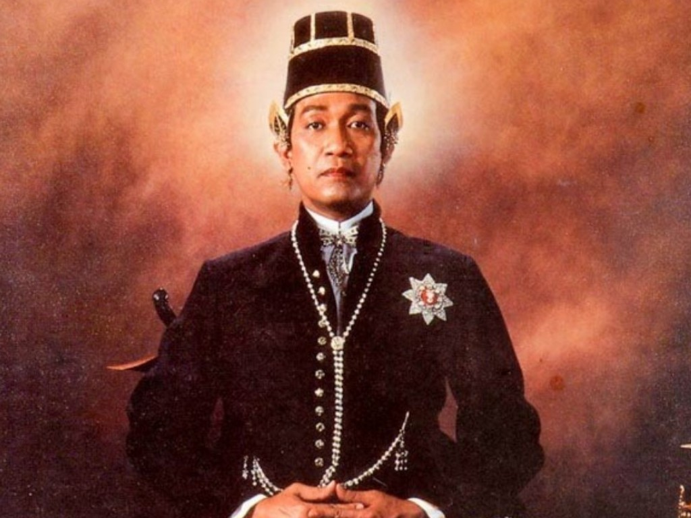
"Hamemayu Hayuning Bawana: Memperindah keindahan dunia."